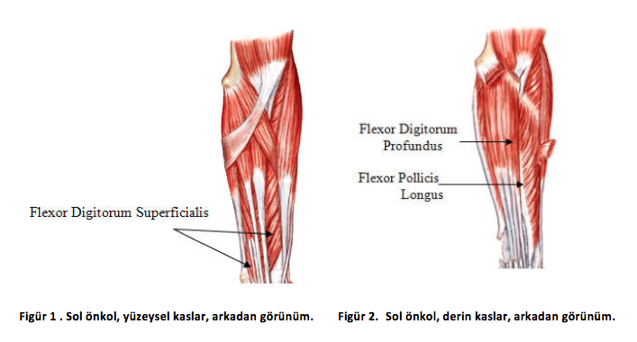
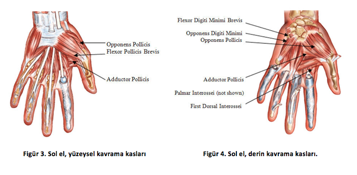
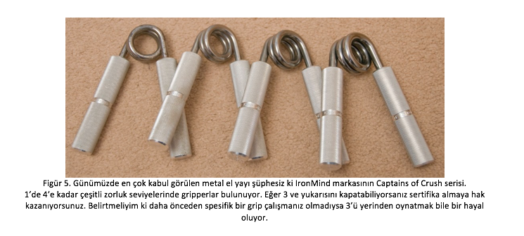
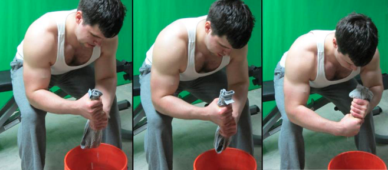
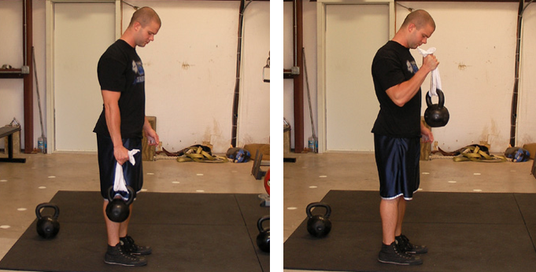
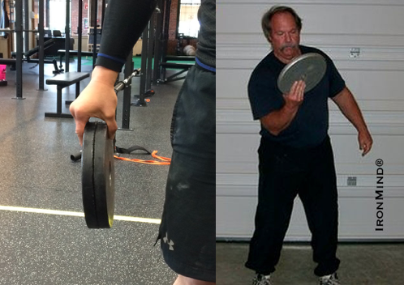
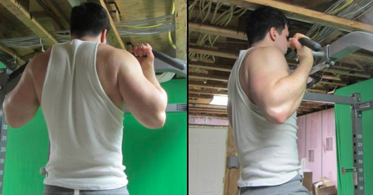
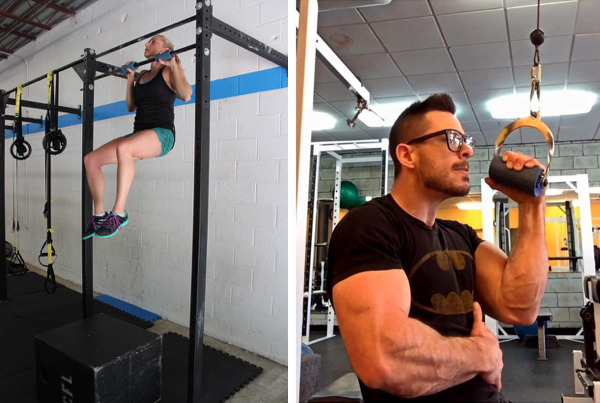

BİLEK KASLARI GELİŞTİRME
Bilek kasları ve kavrama (grip) antrenmanı ile ince bileklerinizi kalınlaştırabilirsiniz.
Annenizin market poşetlerini taşırken, kız arkadaşınıza hava atmak için reçel kavanozunu saniyede açarken ve hatta ego savaşlarına dönen el sıkışmalarında en büyük belirleyici sizin grip kavrama gücünüz, yani bilek kasları!
Aynı zamanda gömlekten taşan kuvvetli ön kol kaslarının sırrı da kavrama gücünü ve bilek kasları çalışmaktan geçiyor.
Kavrama gücünün estetik ve fonksiyonel yararları dışında, yapılan araştırmalar güçlü ellerin sağlık ve uzun yaşam göstergesi olduğunu ortaya koyuyor.
Bilek Kasları, Ön Kol Anatomisi
Grip kuvvetinde rol oynayan birçok küçük kas grubu var:


Bilek Kası Ne İşe Yarar? Kavrama Çeşitleri
Yaygın olarak bilinenin aksine, birden daha çok kavrayış türü bulunuyor ve her biri için spesifik hareketler uygulamak gerekiyor.
- Ezme kuvveti (crush grip): Parmaklarınız ve avucunuz arasındaki kuvveti anlatmak için kullanılıyor. Örneğin el sıkışırken, kola kutusunu ezerken ve plastik el yaylarını sıkarken kullandığımız grip.
- Çimdik kuvveti (pinch grip): Parmaklarınız ve baş parmağınız arasındaki kuvveti anlatmak için kullanılıyor.
- Destek kuvveti (support grip): Parmaklarınız ve obje arasında yarattığınız kuvveti tanımlamak için kullanılıyor. Sporda en çok işinize yarayan grip türüdür, örnek olarak barfiks, deadlift ve bir çok çekiş hareketi support grip gücü gerektirmektedir.
Sağlıklı bir genel kavrayış gücüne sahip olmak için yukarıda belirtilen tüm grip türlerini çalışmak gerekiyor. Eğer dövüş sporlarıyla uğraşıyorsanız, support grip (no gi jiu-jitsu ve güreş) ve crush grip (bjj) kuvvetiniz oldukça önemli. Bouldering sporu ile uğraşanlar için de pinch grip performansı büyük ölçüde etkiliyor.
Kavrama Gücü ve Bilek Kasları Nasıl Çalışılır?
Crush grip
Metal el yayları
Metal el yayları doğrudan crush gripi geliştirmeyi hedef alıyor. Yeni başlayanlar için ezme için yapılabilecek en uygun antrenman bu tarz gripperlar ile yüksek tekrarda çalışmak olacaktır.

Havlu sıkma
Islak ve kalın bir havluyu sürekli olarak bir kovanın içine sıkabilirsiniz.
Tutuş şeklinizi değiştirerek varyasyonlar yaratabilirsiniz.

Havlu curl
Dumbell veya kettlebelle bir havlu sararak hammer curl yapabilirsiniz.

Pinch grip
Plate hold ve curl
Çimdik kuvveti için yapabileceğiniz en doğru egzersiz, resimdeki gibi ağırlık plakalarını 15sn ile 60sn arası statik olarak tutmak olacaktır. Bir diğer faydalı hareket kısa ağırlık plakası ile aşağıdaki gibi curl yapmaktır.

Support grip
Plate hold ve curl
Kendinizi çeneniz barın üzerinde kalacak şekilde çekip, pozisyonunuzu bozmadan beklemeniz gerekiyor. Statik bir hareket olduğu için belinize ağırlık bağlayarak da yapabilirsiniz. 3-4 x (15sn-60sn) şeklinde uygulayabilirsiniz. Eğer bicepsleriniz zincirin zayıf halkası ise, kendinizi çekmeden de asılı kalabilirsiniz.

Plate hold ve curl
Yavaş yavaş piyasada yaygınlaşan fat grip ürünlerini çekiş hareketlerinde kullanabilirsiniz. Egonuzu yenmeniz için sizin için küçük bir sınav olacaktır, zira kaldırdığınız kiloların neredeyse yarıya ineceğini göz önüne almalısınız.

Son olarak dikkat etmeniz gereken şu ki, kavrama kuvveti antrenmanı yaparken haftada 2-3 günden fazla yapmamaya dikkat etmelisiniz; zira ellerinizi fazla kullandığınız antrenmanlar merkezi sinir sisteminizi de yormaktadır.